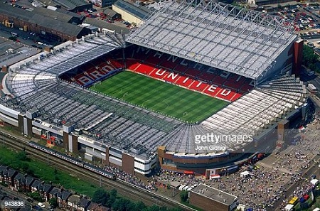

Old Trafford  Old Trafford Imagem do estádio Old Trafford O Old Trafford é um estádio de futebol, localizado no distrito de Trafford, condado da Grande Manchester, Inglaterra. É a sede do Manchester United, clube da Premier League inglesa. Com espaço para 76 212 espectadores, o Old Trafford é o segundo maior estádio da Inglaterra em termos de capacidade, atrás somente do Estádio Wembley, o terceiro maior no Reino Unido, e o décimo primeiro na Europa. O estádio é localizado a cerca de 800 metros (meia milha) do Old Trafford Cricket Ground.